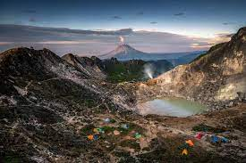
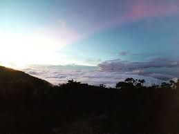

Gunung Sibayak merupakan gunung yang paling banyak dikunjungi dan paling populer di Sumatra Utara karena aksesnya yang mudah dan beragam jalur pendakian yang tersedia.
2.Gunung Sibuatan(2.457 mdpl)

Gunung Sibuatan merupakan gunung tertinggi di Sumatra Utara dengan puncaknya yang eksotis dan pemandangan alam yang menakjubkan.
3.Gunung Sorik Marapi(2.145 mdpl)
Gunung Sorik Marapi adalah gunung berapi aktif yang terletak di Taman Nasional Batang Gadis, Sumatra Utara. Gunung ini memiliki danau vulkanik di puncaknya.